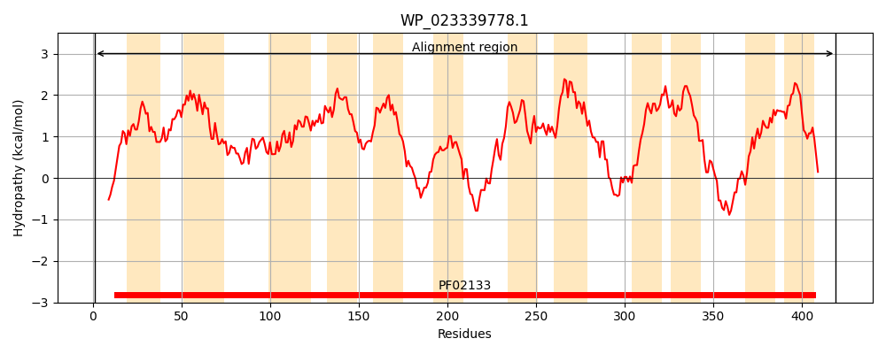
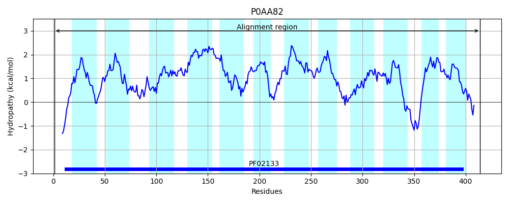
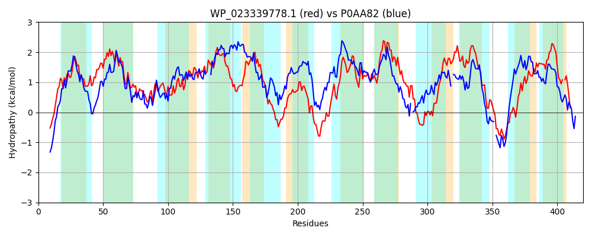

Hit Accession: P0AA82
Hit TCID: 2.A.39.1.1
Hit Description: gnl|BL_ORD_ID|8649 gnl|TC-DB|P0AA82|2.A.39.1.1 Cytosine permease - Escherichia coli.
Mach Len: 420
e:0.000000
Query TMS Count : 12
Hit TMS Count: 12
TMS-Overlap Score: 9.700000
Predicted Substrates:CHEBI:4072;cytosine
BLAST Alignment:
Score: 604 , Bit scores: 237 bits, E-value: 4.3e-74, Alignment length: 420, Percentage identity: 34
Query: 1 MSNSNDFPLVEAPAAGRKGVFSIAMVLFSFTFFTGTMFAGGKLGVSFSIVNLLWIAVIGNALLALYAASLGWIAARSGLNTVLMGRFCFGEIGSKLADFILGFAELGWYAWGTATVAISLVKILALPEALTQPLMVLFGILFCVTALVGYKGLDALSRLSVPLMFVLLMVSMYLALHHAGGWQAMTHIAPSDTMTWSAAITMVFGTFASGATQATNWTRLANSSRTAILASMGSFLIGNGLMIVAGAWCAIVYQQADIVEVLILQGLSVAAVIMLCLNLLTIQGPTIYNVSAAACHLLRSERRRTLTIAAAGVGIVLAIGGMYEMLIPFLVLLGSIIPPIGGVILADYWFARGGRYPLLQNARLPRFNWLGLGAYAAGAVVAYLSPWIAPLVGITVSALVYIVLS-LLSKRQPAAVAEQE 419
MS N+F P + RKGV ++ V+ TFF+ +M+ GG LG S + +IGN LL +Y + LG+I A++GL T L+ RF FG GS L +LG ++GW+ G A AI + K L L L+ + G+L VT G L LS ++VP + L S++LA++ GG A+ + P+ + ++ A+ +V G+F S T ++ R +++ A+L +M +F +GN LM + GA A ADI +V+I QGL + A+++L LN+ T +Y S + +TL++ +G V A+ +Y + +L L + IPP+GGVI+ADY R RY R+ NW+ + A A G + P I P+ + AL Y++L+ +L+++ AA+ E
Sbjct: 1 MSQDNNFSQGPVPQSARKGVLALTFVMLGLTFFSASMWTGGTLGTGLSYHDFFLAVLIGNLLLGIYTSFLGYIGAKTGLTTHLLARFSFGVKGSWLPSLLLGGTQVGWFGVGVAMFAIPVGKATGLDINL---LIAVSGLLMTVTVFFGISALTVLSVIAVPAIACLGGYSVWLAVNGMGGLDALKAVVPAQPLDFNVALALVVGSFISAGTLTADFVRFGRNAKLAVLVAMVAFFLGNSLMFIFGAAGAAALGMADISDVMIAQGLLLPAIVVLGLNIWTTNDNALY-ASGLGFANITGMSSKTLSVINGIIGTVCAL-WLYNNFVGWLTFLSAAIPPVGGVIIADYLMNR-RRYEHFATTRMMSVNWVAILAVALGIAAGHWLPGIVPVNAVLGGALSYLILNPILNRKTTAAMTHVE 414 | Protein Hydropathy Plots: |
|---|
|  |  |
Pairwise Alignment-Hydropathy Plot:
|
|---|
|  |